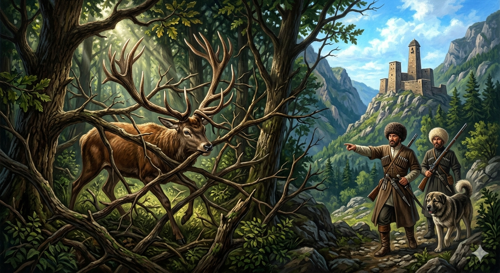

И.А. Дахкильгов. Хьехаме дувцарш - поучительные рассказы-притчи.
И.А. Дахкильгов. Хьехаме дувцарш - поучительные рассказы-притчи. Из ингушского фольклора.

Ийрча когаши хоза кури
Цхьан къаьгача, малх хьежача дийнахьа доагӀача хи чу хьежача, саьна ший куц-сибат бӀаргадейнад. ТӀаккха аьннад цо: - Ер кур ма хоза а дика а бар-кха са, е когаш диткъа а ийрча дола мара. Цул тӀехьагӀа хий менна дӀабодача саьна аькхе баьхка чарахьий тӀа а нийсабенна, топаш етташ эккхабаь, листача хьунагӀа чукхессаб сай. Хьуна юкъерча петараша кур дӀа а лаьца, ше чарахьашта кӀалбусача саьво яьхад: - Айса диткъа а ийрча а да яьхача когаша-ма кӀалхар ма баьккхабар со, айса доаккхал даьча укх куро кӀалбита мара.
РУССКИЙ
Красивые рога и некрасивые ноги
В ясный, солнечный день, на водопое, олень увидел свое отражение и сказал: "Какая у меня красивая крона рогов, и какие у меня безобразныые и тонкие ноги". Ушел олень с водопоя. Тут на него накинулись охотники. Они стали преследовать и стрелять в него. Олень убежал в густой лес. А там его ветвистые рога завязли в ветках деревьев. Понял олень, что стал добычей охотников, и горестно сказал: "Меня спасли бы мои ноги, которые я пренебрежительно называл безобразными, а меня погубила крона рогов, которыми я гордился".
ENGLISH
Beautiful antlers and ugly legs
On a clear, sunny day, at a watering hole, a stag saw his reflection and said: "What a beautiful set of antlers I have, and what ugly, spindly legs I have." The stag left the watering hole. Just then, hunters pounced on him. They began to chase and shoot at him. The stag fled into the dense forest. There, its branched antlers became entangled in the tree branches. The stag realised it had fallen prey to the hunters and said sorrowfully: 'My legs, which I had contemptuously called ugly, would have saved me, but I was doomed by the antlers I was so proud of.'
НОХЧИЙН
ПОГОВОРКИ